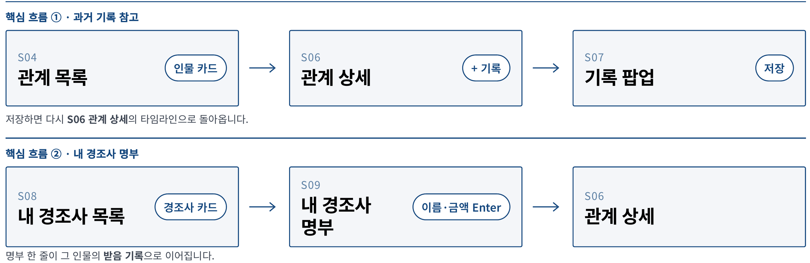
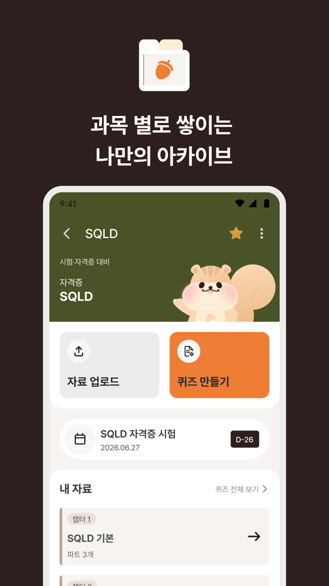

확인된 근거
경력과 작업
프로젝트 전체- 2026.07 – 진행 중
AI 서비스 개발 교육 과정 (SK그룹 SKALA 4기)
풀스택 기초, 데이터 분석, 클라우드, 생성형 AI, 프로젝트 방법론. 11월부터 팀 프로젝트를 진행하고 있습니다. 이 기간에는 교육 과제와 개인 프로젝트에서 직접 구현합니다.
- 숫자는 코드가 계산SKALA증권 세무상담 데스크1인 설계·구현·검증

관계부 — 기능·화면·ERD·API 설계1인 설계·프론트엔드- 8.33MB → 2.10MB교통표지판 인식 모델 경량화2인 과제 · 경량화 방향·실험
- 2024.10 – 2026.06
(주)지킴컴퍼니 · 프로덕트팀 서비스 기획·운영
약국 대상 세무·급여·처방전 보관 서비스. 5인 팀의 유일한 기획자로 화면·데이터·정책·예외를 정리하고 개발팀과 구현 결과를 대조했으며, 새로 연 처방전 스캔센터를 운영했습니다. 2024.10 인턴 입사, 2025.01 정규직 전환.
 급여명세서 서비스 기획계산 기준·정책 · 내부 사용
급여명세서 서비스 기획계산 기준·정책 · 내부 사용 의약품 도매몰 주문·박스 상태 연동기획·검증 · 운영 적용
의약품 도매몰 주문·박스 상태 연동기획·검증 · 운영 적용- 답할 것과 넘길 것의 경계약국 AI 세무 상담서비스 정책·화면 · 베타 단계
- 2026.03 – 07
DDD 사이드 프로젝트 · 퀴켓 PM
IT 직장인 사이드 프로젝트 동아리의 7인 팀(개발 4 · 디자인 2)에서 PM을 맡아 App Store·Google Play에 출시했습니다(팀 결과).

퀴켓 — AI 퀴즈 학습 앱PM·기획 · 정식 앱 구현 개발팀
- 2021.12 – 2024.06
제이머메이드 · 온라인 쇼핑몰 1인 창업
소싱·촬영·상세페이지·광고·CS·물류를 혼자 운영했습니다. 중국 도매업체와 중국어로 직접 협상했습니다.
- 2016 – 2020
복단대학교 법학
중국 상하이에서 공부했습니다. 이때 익힌 중국어를 창업하며 실무로 썼습니다.
실무 개발 직군 경력은 없습니다. 개발은 교육 과정과 개인 프로젝트에서 하고 있습니다.
기술 — 어디에 썼는지
| 영역 | 기술 | 어디에 썼는지 |
|---|---|---|
| 기획 | PRD · IA · 유저플로우 · 기능명세 · Figma | 지킴컴퍼니 서비스 기획, 퀴켓 |
| AI | Spring AI (RAG · Tool Calling), LLM API | 세무상담 데스크, 퀴켓 미니 버전 |
| 백엔드 | Java · Spring Boot · JPA | 세무상담 데스크, ClassTrack |
| 데이터 | SQL · PostgreSQL · Python | 마켓데스크, 라벨링 도구, 해커톤 데모 |
| 프론트엔드 | Vue 3 · React · TypeScript · Next.js | EDU:UP, 관계부 설계, 에이링크, 마켓데스크 |
| 협업 | Notion · Figma · Git/GitHub | 태스크·결정 기록, 화면 설계, 코드 관리 |
언어 · 자격
| 영어 | Business — OPIc IH(2026.06). 대학에서 영어 강의를 듣고 외국인 학생 4인 팀 과제의 진행과 발표를 맡았습니다. |
|---|---|
| 중국어 | Business — 중국에서 6년 유학(고교·학부)했습니다. 중국 도매업체와 중국어로 직접 협상했고, 수행통역 경험이 있습니다. |
| 자격 | ADsP(데이터분석 준전문가) · 재경관리사 · 전산세무 2급 · MOS Excel Expert |
함께 이야기 나누고 싶습니다
서비스 기획 · IT 기획 · AX 직무로 연락 주시면 빠르게 답장드리겠습니다.